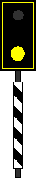
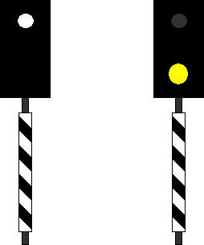

Informationen und Beschreibung zum Bahnübergangssignal Bü 1.
(1)
Bedeutung
Der Bahnübergang darf befahren werden.
›
(2)
Beschreibung
Ein blinkendes weißes Licht über einer runden gelben Scheibe in einer gelben Umrahmung über einem schwarz-weiß schräg gestreiften Mastschild. Scheibe, Umrahmung und Mastschild sind rückstrahlend.

Anstatt des weißen Blinklichts über der Scheibe in der Umrahmung kann das Signal Bü 1 auch ein weißes Licht über zwei waagerecht angeordneten gelben Lichtern bzw. rückstrahlenden Scheiben zeigen.
(3)
DS 301
Im Geltungsbereich der DS 301 kann bis auf Weiteres das Signal auch ein blinkendes weißes Licht über einem schwarz-weiß schräg gestreiften rückstrahlenden Mastschild oder ein blinkendes weißes Licht über einem gelben Licht und einem schwarz-weiß schräg gestreiften rückstrahlenden Mastschild zeigen.

(4)
DV 301
Gilt das Überwachungssignal im Geltungsbereich der DV 301 für mehrere Bahnübergänge, so sind zwei Mastschilder nebeneinander angebracht; dies gilt nicht bei einer Kennzeichnung durch Ankünde- und Kennzeichentafeln.